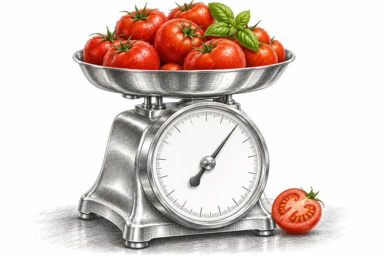
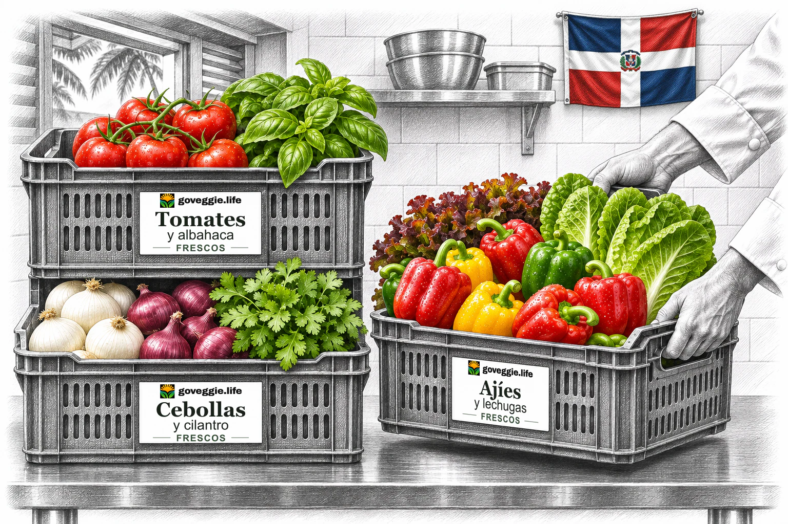
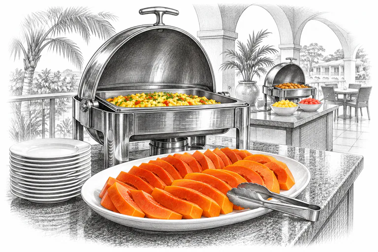
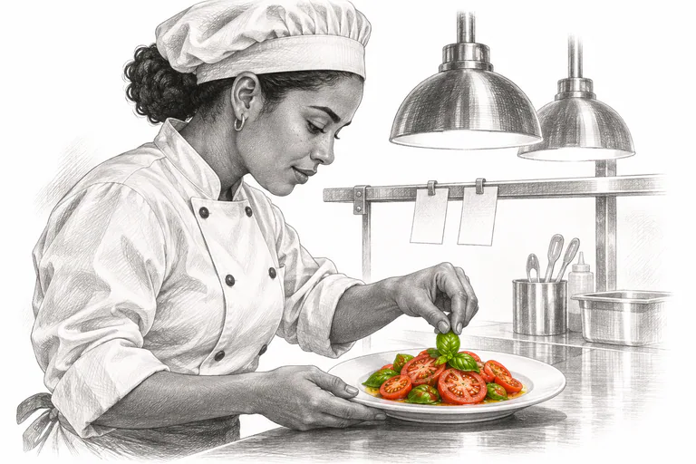
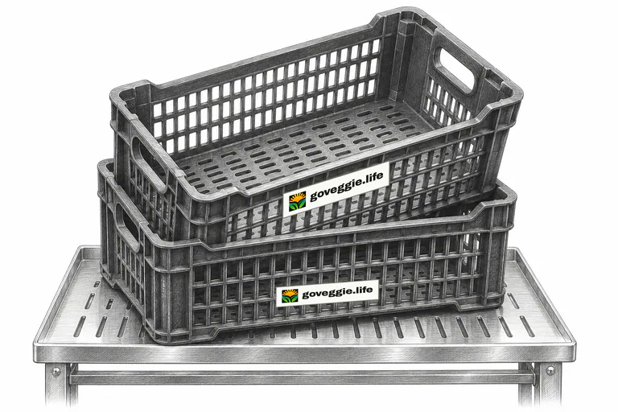
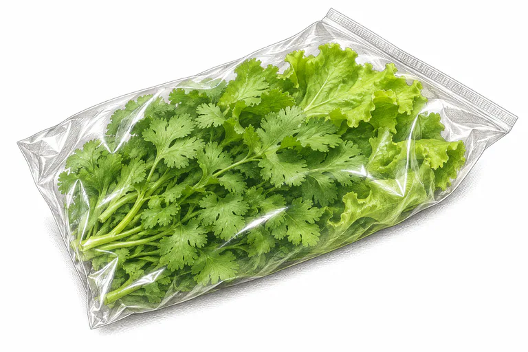
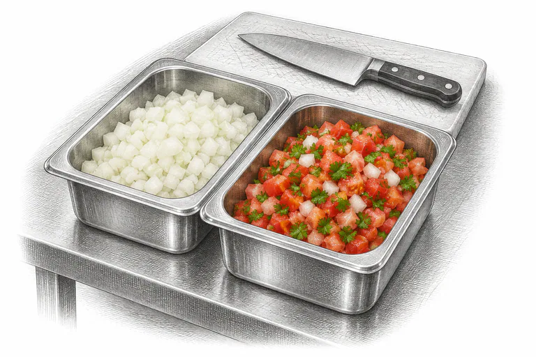
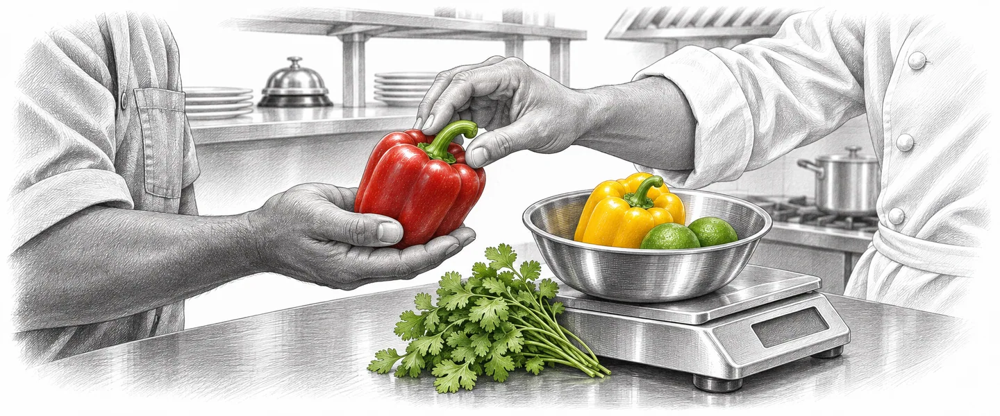
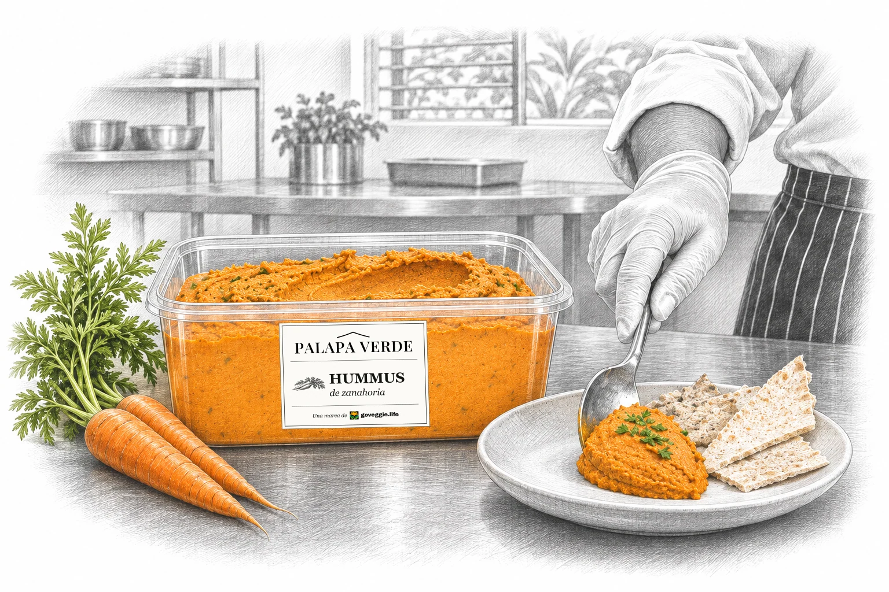

Productos a granel
Frutas y vegetales por peso, sin empaque individual. Cada caja identifica el producto, el calibre, el peso y la fecha de empaque.
Consultar disponibilidadFrutas, vegetales y hierbas frescas en formatos para cocina, y pronto los preparados de Palapa Verde. Un proveedor para tu cocina.
Consultar formatos

Papaya en rodajas para el desayuno y el bufé.

Tomates para ensaladas y salsas de la carta.
Ajíes de colores para brochetas y bandejas.
Limón fresco para jugos, limonadas y cócteles.

Frutas y vegetales por peso, sin empaque individual. Cada caja identifica el producto, el calibre, el peso y la fecha de empaque.
Consultar disponibilidad
La cocina devuelve las cajas vacías en la siguiente entrega para reducir el uso de cartón.

Cilantro y hojas lavadas en bolsas para el servicio de cocina.

Cebolla en cubos o pico de gallo para agilizar la mise en place.
Los formatos, tamaños y condiciones se acuerdan por cocina; consúltanos qué está disponible hoy.
Tipo de negocio, habitaciones o cubiertos al día y productos que usas.
Formatos, cantidades y frecuencia de entrega por acordar, con una ficha de producto para cada artículo.
Definimos contigo un pedido base regular que puedas ajustar.


Estamos preparando formatos profesionales de nuestros chutney, pesto, hummus y salsa: envases grandes para cocina y buffet, y porciones individuales. Todavía no están a la venta.
Conocer Palapa Verde